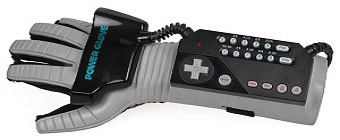
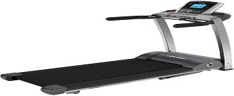
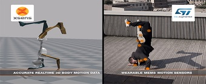

Virtual-Reality-2017
by


Tiartha Sitanggang - 151112416
Juang Nasution -151112637
Theresia Butarbutar - 151111488
A Bespoke.js theme

Definisi Virtual Reality
Virtual reality (VR) atau realitas
maya adalah teknologi yang membuat pengguna dapat
berinteraksi dengan suatu lingkungan yang disimulasikan oleh komputer (computer-simulated environment),
suatu lingkungan sebenarnya yang ditiru atau benar-benar suatu lingkungan yang hanya ada dalam imaginasi.

Sejarah Virtual Reality
Pada 1968, Ivan Sutherland yang juga menjabat sebagai associate professor of electrical engineering di Harvard University, dan muridnya Bob Sproull menciptakan VR/ AR dengan sistem mounted display (HMD),alat tersebut bernama the sword of democles. walaupun sangat berat alat tersebut terdapat binocular display dan head tracking, sejak saat itu semakin banyak penemuan dari berbagai ilmuwan.
1972: General Electric mengembangkan simulator komputer pertama untuk penerbangan.
1977: Sayre Gloves pertama kali didokumentasikan.
1979: Militer mulai bereksperimen dengan headset simulasi
1980: Peta interaktif virtual pertama dibuat
1981: Thomas Furnes mengembangkan “Virtual Cockpit”
1985: Pengembangan sistem praktis pertama dari viewfinder stereo
1990: Surge Sense8 ditemukan oleh Pat Gelband
1991: W. Industries membangun Virtuality, dengan headset dan kacamata untuk melihat VR kemudian muncul dalam karya-karya fiksi ilmiah seperti di film Startrek.

Elemen Virtual Reality
Virtual World
Sebuah konten yang menciptakan
dunia virtual dalam bentuk screenplay
maupun script yang merupakan komponen
utama dari Virtual Reality agar tercipta
sebuah visual virtual.
Interactivy
Yang bertugas untuk merespon aksi
dari pengguna,sehingga pengguna dapat
berinteraksi langsung dalam medan
fiktif atau virtual world
Immersion
Sebuah sensasi yang membawa
pengguna teknologi Virtual Reality
merasakan ada di sebuah lingkungan nyata yang
padahal fiktif atau virtual
Sensory Feedback
Berfungsi untuk menyampaikan informasi
dari virtual world ke indera penggunanya.
Elemen ini mencakup visual
(penglihatan), audio (pendengaran) dan sentuhan
Alat-alat Virtual Reality
Data Gloves
Treadmills
Joysticks
Motion trackers

Software Virtual Reality

Cara Kerja Virtual Reality
Pemakai melihat suatu dunia semu, yang sebenarnya berupa gambar-gambar yang bersifat dinamis.
Melalui perangkat headphone atau speaker, pemakai dapat mendengar suara yang realistis.
Melalui headset, glove, dan walker, semua gerakan pemakai dipantau oleh sistem dan sistem diberikan reaksi yang sesuai sehingga pemakai seolah merasakan sedang berada pada situasi yang nyata, baik secara fisik maupun psikologis.

Kelebihan Utama Virtual Reality
Dengan piranti VR ini, banyak sekali pekerjaan yang awalnya susah bisa dikerjakan dengan mudah, misalnya merancang bangunan atau denah rumah. Selain itu, bisa digunakan untuk pelatihan khusus, seperti simulator menerbangkan pesawat. Jadi, tidak perlu lagi melakukan latihan yang rumit. Yang paling seru adalah untuk menghilangkan stres dengan memainkan game seperti, second life, the sims..

Efek Negatif Virtual Reality
Berdasarkan banyak manfaat yang didapat, pengguna akan kecanduan dunia yang diciptakan teknologi VR dibandingkan dunia nyata
Saking asiknya, pengguna akan menghabiskan banyak waktu untuk bermain
Penggunaan yang terlalu lama dapat mengganggu kesehatan mata
Munculnya penyakit Cybersickness. Penyakit ini diderita akibat penggunaan smartphone atau gadget yang berlebihan.
Terkadang, pengguna masih merasakan sensasi dunia virtual walaupun sudah berada di dunia nyata.

Penerapan Virtual Reality
Media dan Hiburan
dengan adanya perangkat VR ini maka para gamers bisa mendapatkan pengalaman bermain games yang semakin nyata.
Medis dan Kedokteran
Dengan adanya perangkat ini dokter akan mampu untuk mendeskripsikan bagian anatomi tubuh (simulasi anatomi tubuh manusia).
Transportasi
dengan VR Anda bisa mendapatkan pengalaman menerbangkan pesawat yang sangat nyata dan nyaris mendekati kenyataan.
Militer
penggunaan Virtual Reality ini akan mampu membantu para tentara untuk sebuah simulasi perang.
Teknik dan Otomotif
Di bidang teknik dan otomotif, VR akan berguna untuk mendesain mobil.